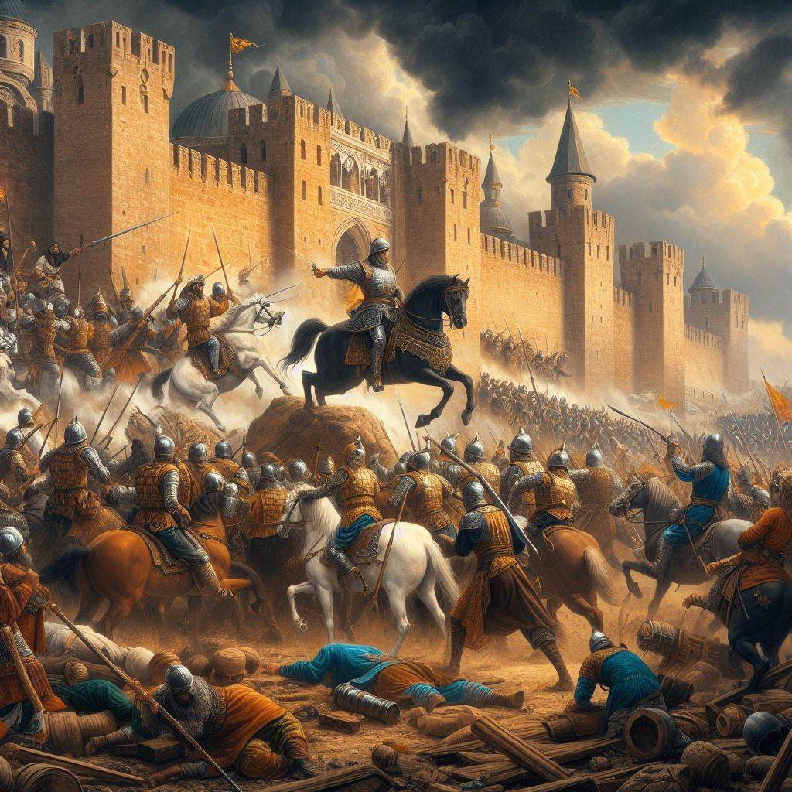

La batalla de Lepanto fue un enfrentamiento naval, ocurrido el 7 de octubre del 1571, entre los musulmanes otomanos y los cristianos, por la expansión y el control del mar Mediterráneo, en el golfo de Patras, cerca de la ciudad griega de Naupacto, en ese entonces conocida como Lepanto En ella se enfrentaron los siguientes bandos:

Imperio otomano: conocido también como el Imperio turco, quien buscaba tener el control total sobre el mar Mediterráneo y los territorios aledaños.
La Liga Santa: sociedad católica y militar conformada entre la monarquía hispánica, los Estados pontificios, Venecia, la orden de Malta, Génova y el ducado de Saboya.
En la historia de la guerra naval, Lepanto marca el último gran enfrentamiento en el mundo occidental que se libró casi en su totalidad entre naves de remo, específicamente las galeras y galeazas. Fue la mayor batalla naval de la historia occidental desde la antigüedad clásica, con más de 400 barcos de guerra. En las décadas siguientes, la creciente importancia del galeón y la táctica de la línea de batalla desplazarían a la galera como el principal navío de guerra de su época, marcando el inicio de la Era de la Vela.
En esta batalla participó Miguel de Cervantes, que resultó herido y perdió la movilidad de su mano izquierda, lo que le valió el sobrenombre de «manco de Lepanto». Este escritor, que estaba muy orgulloso de haber combatido allí, la calificó como «la más memorable y alta ocasión que vieron los pasados siglos, ni esperan ver los venideros». También introdujo la historia en el Quijote, a través de la narración del cautivo, como típica obra de literatura de frontera.
Más que una victoria militar, Lepanto fue una victoria moral. Durante décadas, los turcos otomanos habían aterrorizado a Europa, y las victorias de Solimán el Magnífico provocaron una gran preocupación en la Europa cristiana. La derrota en Lepanto ejemplificó aún más el rápido deterioro del poderío otomano bajo Selim II, y los cristianos se regocijaron de este revés para los otomanos. La mística del poder otomano se vio empañada significativamente por esta batalla, y la Europa cristiana se animó.
CAUSAS
LA CONQUISTA DE CONSTANTINOPLA Y CHIPRE POR LOS OTOMANOS
Este evento marcó un hito en la historia europea. La caída de Constantinopla, considerada anteriormente inexpugnable, fue un golpe devastador para el Imperio bizantino y un momento clave en la expansión del Imperio Otomano.
El Imperio Otomano, con su creciente poder, controlaba importantes rutas comerciales en el Mediterráneo, lo que le otorgaba enormes riquezas. Además, su ejército altamente organizado le proporcionaba un poder militar considerable.
UNA EXPANSION MÁS SIGNIFICATIVA DEL MAR MEDITERRANEO
BUSQUEDA DE MÁS PODER POR PARTE OTOMANA
Las diversas conquistas otomanas tuvieron un impacto significativo en la región y en Europa en general. Uno de los efectos más destacados fue su papel en el aumento de las tensiones entre el Imperio Otomano y las potencias europeas, especialmente Venecia y España.
La formación de la Liga Santa, una alianza entre diversas comunidades católicas, tuvo como objetivo detener el avance otomano. Esta coalición no fue bien recibida por los otomanos, lo que intensificó la rivalidad entre ambos bandos.
LA FORMACION DE LA LIGA SANTA
Aunque Lepanto fue una victoria cristiana, no tuvo el impacto político que se esperaba. La Liga Santa se disolvió poco después de la batalla, y Venecia incluso llegaría a firmar un tratado de paz con el Imperio Otomano en 1573.
FUERZAS
Fuerzas en conflicto
Liga Santa
La Liga Santa estaba compuesta por:
• 227 galeras
• 6 galeazas
• 76 fragatas o bergantines
• 1.815 cañones
• 86.000 marineros
Otomanos
Por su parte, las fuerzas del ejército otomano estaban compuestas por:
• 210 galeras
• 87 galeotas y fustas
• 750 cañones
• 88.000 hombres.
- - Lideres - -
Liga Santa
• Don Juan de Austria (comandante supremo)
• Marcantonio Colonna (comandante de la flota papal)
• Sebastián Venier (comandante de la flota veneciana)
• Álvaro de Bazán (comandante de la flota española)
• Ali Pasha (comandante supremo)
• Mehmed Siroco (comandante de la flota de Berbería)
• Uluç Ali Pasha (comandante de la flota argelina)
• Kara Mustafa Pasha (comandante de la flota jónica)
Otomanos
Desarrollo
DESARROLLO
La batalla comenzó con un choque feroz entre las flotas cristiana y otomana. A pesar de la superioridad numérica de los otomanos, la táctica de formación cerrada de los cristianos y su artillería pesada permitieron que resistieran el embate inicial. La batalla se convirtió en un enfrentamiento cuerpo a cuerpo, con intensos combates a corta distancia. La superioridad en la artillería y la pericia de los comandantes cristianos resultaron decisivas. Eventualmente, la flota otomana fue derrotada, sufriendo graves pérdidas. Se enfrentaron en ella la armada del Imperio otomano contra la coalición católica organizada por el papa Pío V, llamada Liga Santa, formada por el Imperio español, los Estados Pontificios, la República de Venecia, la Orden de Malta, la República de Génova y el Ducado de Saboya. Las fuerzas otomanas navegaban hacia el oeste desde su estación naval en Lepanto cuando se encontraron con la flota de la Liga Santa que navegaba hacia el este desde Mesina, en Sicilia. El Imperio español y la República veneciana eran las principales potencias de la coalición, ya que la liga estaba financiada en gran parte por Felipe II de España, y Venecia era el principal contribuyente de barcos.
PREPARATIVOS DE LOS CRISTIANOS
1. Formación de la Liga Santa: La Liga Santa fue una alianza militar formada por varios estados cristianos, incluyendo España, la República de Venecia, el Papado y otros, con el objetivo de combatir la expansión otomana en el Mediterráneo.
2. Reclutamiento de Flotas: Los líderes de la Liga Santa, especialmente Don Juan de Austria, medio hermano de Felipe II de España, y la República de Venecia, organizaron la reunión de una gran flota naval compuesta por galeras y galeones de varios países cristianos.
3. Estrategia y Planificación: Los comandantes cristianos planificaron una estrategia para enfrentar a la flota otomana, que era más numerosa. Decidieron utilizar tácticas de formación cerrada, aprovechando la superioridad de su artillería y la experiencia en combate.
1. Movilización de Flotas: El Imperio Otomano movilizó una gran flota naval, bajo el mando del experimentado almirante otomano Ali Pasha, para enfrentarse a la Liga Santa.
2. Reclutamiento de Tropas: Los otomanos reunieron una fuerza naval formidable, compuesta principalmente por galeras y otras embarcaciones, junto con tropas terrestres para un posible desembarco.
3. Estrategia y Planificación: Los otomanos también planificaron su estrategia, confiando en su superioridad numérica y en la táctica del abordaje para superar a los cristianos. Ali Pasha confiaba en la experiencia y el poderío de su flota para derrotar a la Liga Santa.
PRAPARATIVOS DE LOS TURCOS
La victoria en la batalla de Lepanto fue un golpe significativo para el poder naval otomano en el Mediterráneo. Aunque no fue una derrota decisiva que ponga fin a la expansión otomana, marcó el comienzo del declive de su supremacía naval en la región y reforzó la moral de los estados cristianos.
Consecuencias
UNA SIGNIFICATIVA DERROTA
Los otomanos no habían perdido una batalla naval desde el siglo XV. Supuso detener la expansión otomana en el mediterráneo, así como también asegurar el dominio en occidente y la confianza en el oeste de que los turcos antes imparables, podían ser derrotados.
Los otomanos fueron rápidos en reconstruir su armada. Para 1572, a los seis meses de la derrota, más de 150 galeras, 8 galeazas y más de 250 barcos fueron construidos, incluyendo ocho de los más grandes barcos capitanes jamás vistos en el Mediterráneo. Con esta nueva flota el Imperio Otomano fue capaz de volver a asegurar su supremacía en el Mediterráneo Oriental.
la Batalla de Lepanto tuvo consecuencias tanto militares como políticas y religiosas, que afectaron el equilibrio de poder en el Mediterráneo y la percepción de las potencias europeas y el Imperio Otomano.